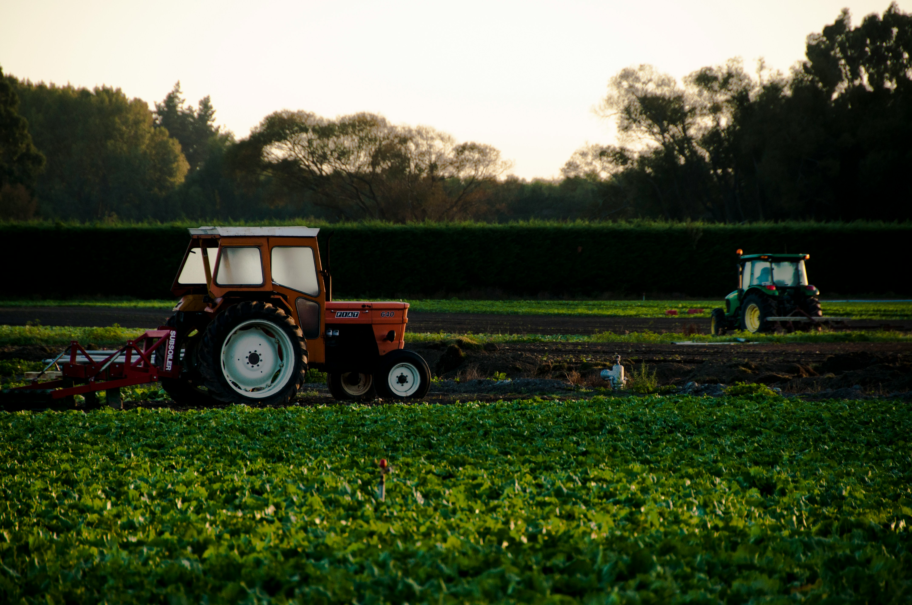

农业大数据对比
纵览古今农业技术演变，从传统农具到智能设备，从经验耕作到精准农业，全面对比分析农业发展的历史脉络。
数据可视化展示关键指标变化，揭示农业科技进步的轨迹。
古代农业
探索中国古代农业智慧，从都江堰水利工程到《齐民要术》，从二十四节气到梯田技术，感受先民的农耕智慧。
了解传统农具演变、耕作制度发展及古代农业科技成就。

现代农业
了解物联网、大数据、人工智能等前沿技术在现代农业中的应用，探索精准农业、垂直农场等创新模式。
展示智能农机装备、农业信息化系统及可持续发展实践。